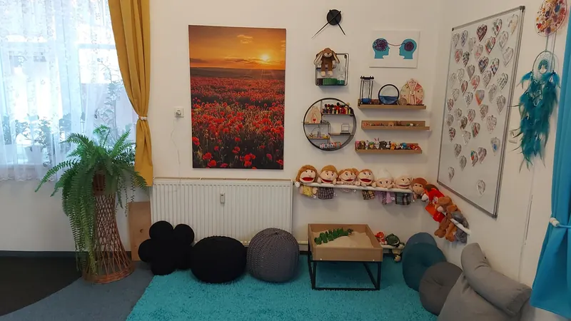

Služby
Psychoterapie, koučování, hypnoterapie a mediace ve Valašském Meziříčí
„Jediný způsob, jak najít smysl života, je přijmout odpovědnost za své vlastní bytí.“
Jak Vám mohu pomoci
Řešení problémů a krizových situací
Život přináší situace, které mohou být obtížné zvládnout sami. Ať už jde o nepříjemné emoce, nečekané události nebo dlouhodobé problémy, nabízím Vám prostor, kde můžete otevřeně mluvit o svých starostech. Společně budeme hledat způsoby, jak najít úlevu a znovu získat rovnováhu.
- Psychické obtíže: smutek, úzkosti, deprese, pocity beznaděje a nesmyslnosti života.
- Krizové situace: rozchod, ztráta blízké osoby, nemoc, osamělost.
- Úzkosti a strachy: fóbie, posttraumatický stres, nutkavé chování.
- Vztahové problémy: konflikty v rodině, na pracovišti, s přáteli.
- Psychosomatické obtíže: potíže bez jasné fyziologické příčiny.
- Syndrom vyhoření: ztráta energie, motivace a smyslu v práci nebo životě.
Rozvoj a změna
Pokud cítíte, že je čas udělat krok kupředu, objevit svůj potenciál nebo přetvořit svůj život, jste na správném místě. Nabízím podporu v oblasti osobního i profesního růstu, hledání rovnováhy a posilování vztahu k sobě i druhým. Společně se zaměříme na to, co Vás posune blíž k vašim cílům a spokojenosti.
- Sebepoznání a přijetí: práce na vztahu k sobě, budování sebevědomí.
- Osobní a profesní růst: plánování kariéry, hledání seberealizace.
- Změna životního stylu: rovnováha mezi prací a osobním životem, time management, prokrastinace, emoční přejídání.
- Rodičovství: podpora v otázkách výchovy, učení a digitálních závislostí dětí.
- Hledání směru: rozhodování a přechodové životní situace.
Terapie s dětmi a dospívajícími
Při práci s dětmi a dospívajícími využívám přístup, který odpovídá jejich vývojové fázi, potřebám a způsobu vnímání světa. Terapie u mě probíhá hravou formou, která podporuje zvědavost, kreativitu a rozvoj dovedností vedoucích k překonání obtíží. Vše probíhá přirozeně, nenásilně a s cílem podpořit dítě v nacházení vlastních silných stránek a cest ke zvládnutí životních výzev. Pokud je to přínosné, spolupracuji také s rodiči nebo dalšími podpůrnými osobami, které mohou dítěti pomoci v jeho rozvoji.

Terapeutické pískoviště
Jedním z nástrojů, které využívám, je terapeutické pískoviště – metoda, která umožňuje dětem vyjadřovat své pocity, myšlenky a zážitky prostřednictvím symbolů a her. Dítě si samo vytváří svůj svět v písku a objevuje nové způsoby řešení situací, se kterými se potýká. Tato metoda pomáhá dětem lépe porozumět sobě samým, zpracovat náročné životní situace a posílit sebedůvěru.
Kids’ skills – dovednosti místo problémů
V práci s dětmi a dospívajícími používám také metodu Kids’ Skills Bena Furmana. Tento nepatologizující přístup se nezaměřuje na problém samotný, ale na dovednosti, které dítě potřebuje k jeho zvládnutí pomocí vnitřní motivace a schopnosti vidět řešení. Metoda Kids’ Skills je vhodná pro děti přibližně od 4 let až po období dospívání. Pomáhá například při:
- Úzkostech a strachu (včetně psychosomatických projevů).
- Problémech s impulzivitou, vztekem či výbuchy emocí.
- Ztrátě motivace a depresivních náladách.
- Obtížích v komunikaci s rodiči a autoritami.
- Rozhodování o budoucnosti a hledání směru.
- Dalších výzvách spojených s dětstvím a dospíváním.
Rozdíly mezi službami
Na svých stránkách nabízím služby psychologa, psychoterapeuta, kouče, mediátora i hypnoterapeuta. Každá z těchto oblastí má své specifické zaměření a přínosy. Následující přehled Vám pomůže pochopit rozdíly a vybrat si pro Vás tu nejvhodnější formu podpory. Je ale důležité vědět, že si nemusíte vybrat předem – při naší spolupráci vždy přizpůsobím přístup Vašim aktuálním potřebám. Společně se zaměříme na to, co Vám v dané chvíli nejlépe pomůže, a využijeme kombinaci těchto přístupů podle aktuální situace.
Psychologické poradenství
Jako psycholog se zaměřuji na analýzu situace, problémů a zprostředkování informací, které mohou vést k jejich řešení. Společně identifikujeme možné cesty, jak se posunout dál, přičemž rozhodnutí o řešení zůstává na Vás. Cílem práce není hluboká změna osobnosti, ale praktická pomoc, která Vám umožní lépe zvládat konkrétní výzvy.
kdy tuto službu zvolit: pokud hledáte poradenství, podporu při rozhodování nebo řešení aktuálních problémů.
Psychoterapie
Psychoterapie pomáhá zmírnit úzkosti, deprese, stres a vztahové problémy prostřednictvím psychologických metod. Zaměřuje se na zpracování traumat, obnovení pocitu bezpečí a zdravější fungování v každodenním životě. Může doplňovat farmakologickou léčbu, kdy léky tlumí příznaky a terapie mění myšlenkové a emoční vzorce, což může vést ke snížení medikace. Kromě léčby nabízí psychoterapie prostor pro osobní rozvoj – pomáhá budovat sebevědomí, měnit nezdravé návyky, posilovat vztahy a hledat životní rovnováhu. Není jen cestou k překonání obtíží, ale i k hlubšímu sebepoznání a smysluplnějšímu životu.
kdy psychoterapii využít: pokud hledáte dlouhodobou pomoc při hlubších potížích nebo chcete pracovat na lepším vztahu k sobě i svému okolí.
Koučování
Koučink je zaměřen na dosažení konkrétních cílů, zlepšení výkonu a hledání motivace. Věnuje se především přítomnosti a budoucnosti – pomáhá Vám naplánovat konkrétní kroky a dosáhnout osobních či profesních ambicí. Koučink se nezabývá minulými traumaty ani léčbou psychologických problémů.
kdy koučování využít: pokud chcete pracovat na kariérním růstu, zlepšení vztahů nebo na jiných konkrétních cílech.
Hypnoterapie
Hypnoterapie je bezpečná metoda využívající hlubokou relaxaci k práci s podvědomím. Hypnóza není stav bezmoci, ale přirozený proces soustředění, při kterém si plně uvědomujete okolí a máte kontrolu nad svými rozhodnutími. Cílem hypnoterapie je podpořit změnu myšlenkových vzorců a zmírnit stres, úzkost či nežádoucí návyky. Pomáhá také posilovat sebevědomí a objevovat nové souvislosti. Její účinnost závisí na Vaší motivaci a ochotě začlenit nové poznatky do života.
kdy hypnoterapii využít: pokud hledáte hlubší práci na změnách návyků, zvládání stresu nebo podporu při osobním růstu.
Mediace
Mediace je strukturovaný a důvěrný proces, který pomáhá stranám v konfliktu najít vzájemně přijatelné řešení rychleji a levněji než soudní řízení. Mediace vám dává kontrolu nad výsledkem, umožňuje zachovat vztahy a nabízí bezpečný prostor pro otevřenou diskusi.
kdy mediaci využít: pokud hledáte cestu k řešení konfliktů, například v rodinných, pracovních nebo sousedských vztazích, kde je žádoucí obnovit komunikaci a dojít k dohodě.
Přednášky a semináře
Občas potřebujeme čas na zastavení, uvědomění a nové impulzy. Přednášky a semináře jsou příležitostí k nahlédnutí do aktuálních psychologických témat a získání inspirace pro každodenní život, např. jak v životě hledat smysl a rovnováhu, jak zvládat stres či emoční přejídání, jak si lépe organizovat čas nebo se odpojit od digitálního přetížení. Témata jsou podávána srozumitelně a prakticky. Cílem není jen předávání informací, ale také vytvoření prostoru pro sdílení, uvědomění a nalezení vlastních cest ke spokojenějšímu životu.
kdy přednášky a semináře využít: pokud hledáte inspiraci, nové pohledy nebo praktické nástroje pro pozitivní změny v osobním životě.